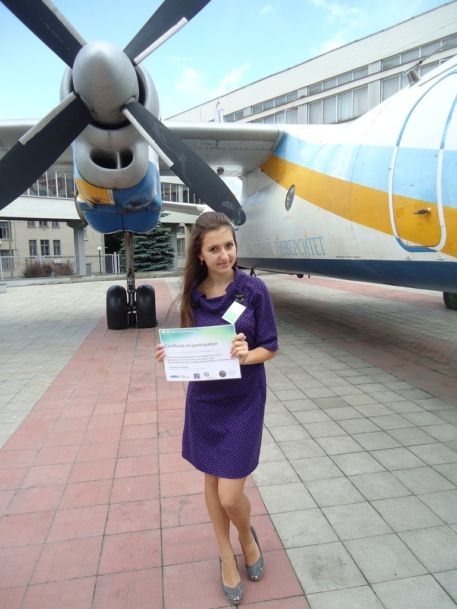

Студенти кафедри приймають активну участь у міжнародних наукових конференціях.
2-ге місце секції «Комп'ютерні технології в поліграфії» конференції «Інформаційні інтелектуальні системи»

Якимович А. прийняла участь в 17-му Міжнародному молодіжному форумі «Радіоелектроніка та молодь у ХХІ столітті» (20-22 квітня 2013 р., м. Харків).
{{news.titl}}
{{news.titlEng}}
{{news.date}}
{{numb}} {{achievement}}